Contain
Your Excitement
Timirah James ★ Connect.TECH ATL ★ 2018
Thanks [intro person]
Developer Advocate @ Cloudinary Founder @ TechniGal LA (Meetup Group) Singer/Songwriter "Coderitis" - GERNiE B.
*Cloudinary*
I currently work as a developer advocate at Cloudinary. Cloudinary is an image and video back-end for web and mobile developers. If you work with images – especially responsive images — Cloudinary can help you do that work better. We actually don't have a booth this year, but feel free to bug me or my colleague Eric who actually gave an awesome talk about lazy and progressive images earlier today -- if you wanna learn more about us.
Prior to working at Cloudinary, I actually spent a large part of my career working on mobile development and most recently serverless solutions.
*TechniGal LA*
*Coderitis*
*Background*
So that leads me to the last thing I wanna share about myself. I actually got my start in tech right here in Atlanta. I went to a performing arts high school not too far from here, and during my junior year I stumbled upon this flyer about a tech program that was seeking high school students to be interns at tech companies throughout the Metro Atlanta Area. I had zero experience as a programmer, but my curiousity got the best of me. So I hopped online and crammed as much info as I could to build a crappy website. Just enough to showcase my eagerness and potential. And next thing you know I began training as a web development intern for at a local tech company for two consecutive summers.
So I just thought that was a pretty cool thing to share.
So today, I want to talk to you about
Element queries!
Element queries!
[click]
Or container queries, or whatever.
I suppose a brief note on terminology is in order
“Element?” “Container?”
Same-same.
We’ll get into the distinction between “element” and “container” queries later, but for the first part of this talk, I’ll use the terms more or less interchangably.
= media queries for elements
Both terms to refer to the same idea. In a nutshell: we should be able to adapt element’s styles based on their own state. Not just the state of the entire viewport.
Media queries are a whole-viewport-solution...
...designed to solve whole-document problems.
It’s worth taking a moment to think about about where Media Queries came from.
How many of have ever written a print-specific stylesheet?
<link rel="stylesheet" type="text/css"
media="print" href="serif.css">
<link rel="stylesheet" type="text/css"
media="screen" href="sans-serif.css">
@media print {
* { font-family: serif }
}
@media screen {
* { font-family: sans-serif }
}
@media screen and (min-width: 400px) {
...
}
Well the original media queries spec, published about 17 years ago, opens with the following example. In ye olden dayes, it was actually pretty common for webmasters to provide a cascading style sheet for screens and a separate cascading style sheet for print, containing styles tailored for laser-printed pieces of paper.
The media queries spec says, hey, this is a decently common use case -- how about we let you wrap these two sets of styles up into the same stylesheet, like this:
[click]
“Media” queries were designed to let you wrap your media-specific styles in a little @media block -- and no separate stylesheet is required.
As luck would have it, the spec authors thought, well, as long as we’re letting you query media *types*, we might as well also let you query specific media *features*, like width.
[click]
And just like that, this form of media queries that we all know and love were born.
Element Queries, explained by Tommy Hodgins
“If we think in terms of building a large physical structure with weak material. A great amount of external support is required to hold it together, and they things have to be overbuilt to stay sturdy. When you’re building a website using HTML, CSS, and Javascript, this external support would probably look like frameworks, plugins, preprocessors, editing tools, package managers, the works!” Instead of adding yet another plugin to the top of the stack, what if, by extending one of the core languages, CSS, we could strengthen the material that websites are built from, developing better, stronger websites that require less external support and tools to build? Thus, element queries!”
Responsive pages
When we we’re designing web *pages*, and we want to adapt those pages in response to the state of the *whole viewport*, they’re a great solution.
But increasingly, we’re not really designing monolithic pages.
[click]
We’re designing modular *components*. And what we want, is the ability to set breakpoints directly on those components.
Whether you’re working with Web Components, React components, style-guides and pattern libraries, etc, media queries are a kludge and are for the most part can be considered a hack.
.block {
background-color: lightblue;
}
@media (min-width: 797px) {
.block {
background-color: deeppink;
}
}
.block:min-width(100px) {
background-color: deeppink;
}
So now let's go thru an example! Let’s say I've got a line of five little light-blue flexible components, like this.
And let’s say that when these boxes get to be 100px wide, I want to change them in some way – lets say I want to make them pink.
[drag box]
Just like that..
So, I'll write a media query. I'll figure out how wide the entire viewport is, just as each element hits 100px-wide. And use that whole viewport width as my min-width, like this
[click]
Now what I’ve done here, that’s hacky and bad, is embed a bunch of stuff regarding the external state into what should just be a statement about width of each box. Remember, all I should be concerned about is the width of the boxes. If they’re at least 100px wide, make them pink. But now I'm in a situation where, if many things *around* the boxes change -- let's say I tweak my margins [click], or change the number of boxes [click] -- The media query no longer does what I want, and I’ll have to change it. [click] That's bad and not what we want at all!
What we really want to be able to say, here, is say exactly what I mean. When these specific *elements* are at least 100px wide, turn them pink. I want to be able to say something like this [click].
That's an element query.
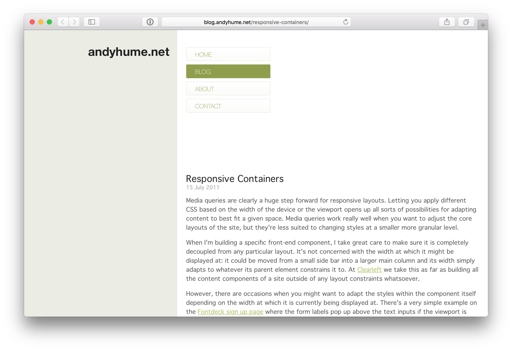
Responsive Containers
Here’s the first mention I that could find of the general concept – a clear and concise six-year-old blog post from Andy Hume, complete with a working, JavaScript-based implementation of the idea. Andy called them “Selector Queries”.
Turns out, they were a good idea...
...and it wasn’t too long before some of the smartest minds in the industry were calling element-level queries “the number one missing tool for responsive design.”
By 2014, serious efforts were underway to turn what had just been an exciting idea into an empowering reality.
But. There were problems. More on those later.
For now, I just want to take you on a journey of increasingly sad and desparate tweets.
It starts innocently enough, with earnest pleas and sound arguments.
But by 2015, impatience started to set in.
Front end developers began do wonder... is anyone listening?
How many times do we have to say it?
Doesn’t anybody understand what a big deal element queries would be?
Evidently, they don't. Diffrent developers have responded to this differently. Sadness is a common reaction.
Others have resorted to dry humor.
Bitterness (you know, sometimes the saddest tweets are the truest tweets...)
And desperate cries for help
Some, sadly, have been driven to madness.
My favorite response might be Nicole Sullivan's. Nicole thought, well, if I can't have element queries, at least I can have $20!
But for those who, in 2017, still nurture hope, the message is loud and clear
What’s the hold up?
So what's the hold up? Element queries are clearly in demand. Why haven’t they been implemented yet?
To understand that, we need to take a close look at how browsers actually turn CSS and HTML into rendered pixels on screens
Please excuse a wildly simplified explanation of
the rendering pipeline
We'll call the series of processes that does this, the “rendering pipleine.”
A big ol' diagram
Start with text files - our HTML + CSS
[click]
Which we then load over the network, and parse into data structures.
[click]
Our HTML gets parsed into a DOM tree
[click]
And our CSS gets parsed into the CSS Object Model - which is represented here by this shrub or bush.
[click]
Alright so now that weve got our object models, we run all of the selectors and figure out which rules apply to which elements
[click]
and end up with a Render Tree. The Render Tree contains, basically, the “computed” styles — what we see when we inspect an element with dev tools. But there are still a few key values missing: anything having to do with the element’s size or position on the page. Figuring *that* stuff out is left to the next step
[click]
Layout! Which, is a very complex process that, when complete, gets us a
[click]
Box Tree. And now that we know the size and position of every element,
[click]
we can actually paint pixels,
[click]
and display a webpage.
So! That's how browsers render a webpage. Where do element queries fit into this picture?
[click]
Element queries introduce giant backwards arrow, from the box tree, all the way back to running selectors.
In order to know which selectors apply to an element, we have to know it's layout.
This inserts a giant loop into a previously linear pipeline.
And it's bad for three reasons.
🔁
Problem #1:
Circular dependencies
First! Circular dependencies, aka, infinite loops.
Now that the layout can affect our styles, which can effect the layout, which can affect the styles, which can affect the layout – well, you can see the problem. Now that we have a loop, what's to stop us from going round-and-round, forever?
[click]
.block:min-width(10em) {
width: 5em;
}
An example is in order. What do you think this query will do?
We're saying, if the block is wider than 10 em, make it 5em wide.
But if the browser makes it 5em wide, the query will no longer apply, and it will go back to it's original width.
Which then makes the query true again – and we're off.
I'm about to show you what that looks like..
[drag element out]
oh. Oh dear. CSS should never do that.
[drag back]
And you might be thinking, well, ok, that's clearly bad, but look at the ridiculous code you wrote? Surely *I* would never write anything as cringey as that.
I know you might be thinking this, because I thought it too. But, for most people who have tooled around with this stuff for any amount of time, let me tell you -- they've more than likely written themselves into infinite loops *several times*.
When you're querying an element's width, any rule that you apply that changes the width of the element, risks putting you into a loop. And that can happen in some unexpected places, like this... [click]
.container {
display: flex;
}
.block:min-width(3em) {
border: 0.25em solid deeppink;
}
Like this.
Here, I've got three little divs in a flexbox-row, and when they reach a certain size, I want to put a border around them.
Well, the border will get added outside of their content box. The space that each of them occupies on the layout will grow. So to fit into their flex container, with their borders, they all have to shrink. You can see where this is going.
Take a look..
[drag]
Well. That's unfortunate. Next slide.
Super
califragilistic
expiali
docious
.container {
display: flex;
}
.block:min-width(3.25em) {
letter-spacing: 0.1em;
}
Element queries can get you into some other weird situations.
Like here, I've got four divs in a flexbox, and when they get to a certain width, I'm adding some letter-spacing.
Seems simple enough.
[start dragging]
And yah, ok, that worked. But what happens when I shrink them again?
[shink]
Califragilistic is stuck. It can't go back to it's initial state, because its new rules, combined with its content and the way flexbox works, mean that it, well, cant.
I don't know. That makes sense, after you think it through. But it's weird.
Element Queries
And so this is where we go from talking about *element* queries
[click]
to talking about *container* queries.
The goal here is to break the loop. If letting elements query *themselves* is so problematic, maybe we can restrict them to querying their *container*?
.wrapper {
border: 0.0625em solid deeppink;
}
.block:container(width > 10em) {
width: 5em;
}
Here's our first element-query-infinite-loop example, written with container queries.
I've wrapped my blue box up in a pink container.
[drag element out and in a time or two]
So that didn't quite work out.. And this has a lot to do with heredity.
By querying the parent, but setting styles on the child, We've avoided an infinite loop. So, we should be good right?
Not quite.
See there are all sorts of things that we can do in CSS to get a parent's size to be affected by its children.
For instance: what happens if we float the container?
[click]
The floated container is now "shrinkwrapping" to fit its contents.
Which, right now, are set to be 100% of their parent -- so everything reduces to zero. But let's give our element an initial size.
[click]
Well, that's a real pile of poo.
Next slide.
Two solutions...
Container queries, in and of themselves, don't totally get us out of this mess. But I'm happy to report that not one but *two* solutions to this problem, actually do.
(closest) Container (whose width is not influenced by its children) Queries
The first is completely automatic, and somewhat subtle. Basically, if an element’s size *can* possibly be affected by its children, skip over it, and make the query apply to the next anscestor up the chain.
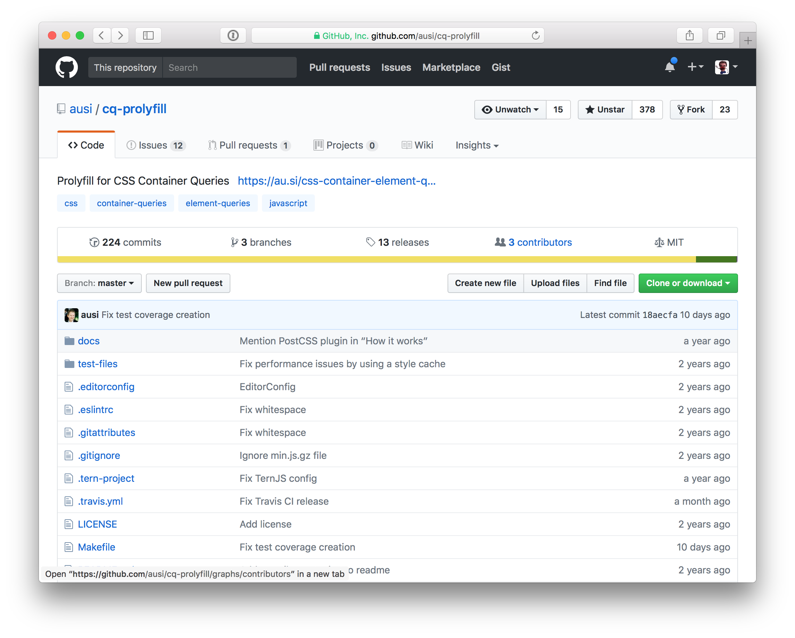
Conceived of + implemented by Martin Auswo¨ ger
This idea was, to my knowledge, first conceived of, and then implemented by, Martin Auswöger, in his container query prolyfill, which is called `cq-prolyfill`. It works!
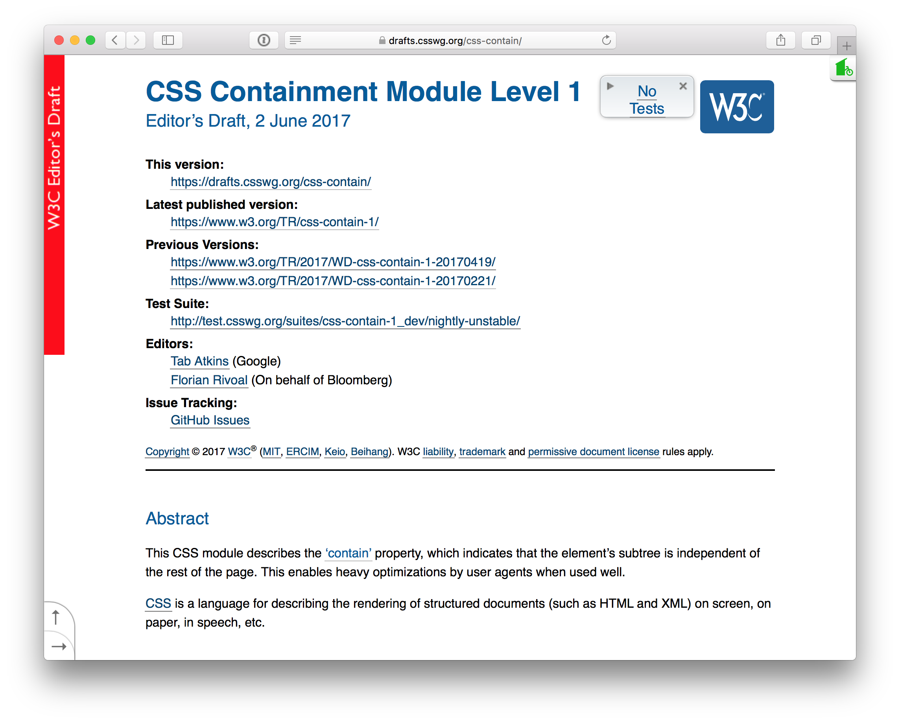
contain: strict;Spec’d in CSS Containment Module Level 1
There's another working idea out there, too, which asks authors to be more explicit – CSS Containment.
Basically, if you slap a contain:strict; on an element, you’re telling the browser in very plain terms that should it *never* let that individual elements' children determine anything about its size.
Both Martin's solution, and contain:strict, separate what we're querying, from what we're adapting. By doing so, they prevent us from ever creating circular dependencies.
So -- first problem: solved! On to the next one.
🏚
Problem #2:
Breaks layout engine architecture
Remember our pipeline? For twenty years, browsers have been following that path from left, to right, in a single pass.
Even if we can solve the problem of *infinite* loops -- finite numbers of trips around the loop are still problematic. Especially when browsers assume and have always assumed that we can figure out which styles apply to what elements BEFORE we know how large those elements are.
The browser-engine-rendering-architecture problem was nicely summarized by Elika Etemad, aka fantasai, of the CSS Working Group, in response to a question asked by none other than Sarah, about what it would take for Container queries to become a thing.
[read slide]
Doesn't sound promising.
On Thu, 21 Mar 2013 at 3:08 PM, Elliott Sprehn wrote :
> This doesn't seem very easy to implement because it breaks the sequential
> processing model :
>
> 1. resolve style on elements such that you have a flattened set of
> properties.
> 2. layout the elements if things are different then the last time we did
> step 1.
> This would be a big undertaking in Webkit so I don't think it falls
> anywhere in the near future.
On Thu, Mar 21, 2013 at 6:34 PM, Elliott Sprehn wrote :
> I think there's a high implementation cost for this kind of thing
> It certainly could be done given enough time and someone very
> motivated...
And here’s Elliott Sprehn, from the WebKit team, saying the same thing.
breaks the model... big undertaking... high implementation cost...
Container queries would be an unusually large amount of work, for implementors.
But, as we saw earlier, there has also been an extraordinary amount of demand for them, from authors.
So what we've got here, is an unstoppable force — authors working with components in responsive designs — meeting an immovable object, which is 20 years of tightly-optimized code in browsers, whose fundamental architectural assumptions, container queries would break.
What happens when those things collide?
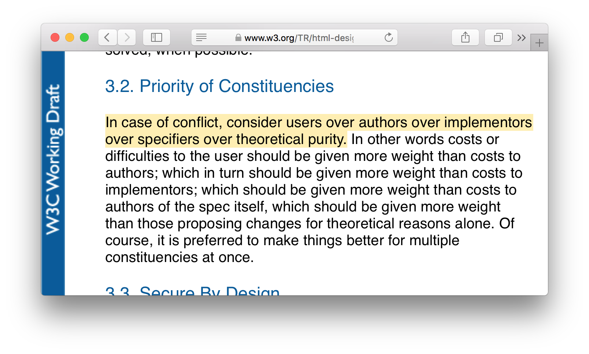
From the HTML Design Principles
That answer lies within the HTML design principles. It's called the "priority of constituencies", and it states that...
“in case of conflict, consider users over authors over implementors over specifiers over theoretical purity.”
This is a beautiful statement, which, at multiple levels, implores the powerful few to understand and serve the relative many, who must live with the products and consequences of their work.
Also, it means, we win, right!?
[click]
Authors over implementors! That means if we want container queries, but implementors think they’d be really hard or whatever – too bad! Quit your bitchin’ and start re-architectin’!
Not so fast. In this hierarchy. There is one constituency whose concerns can, and should, matter more than ours.
[click]
Users. Which brings us to the last, biggest, and best reason that Container Queries aren’t a thing yet.
🐌
Problem #3:
Fundamentally slow
They’re fundamentally slow.
🐇
...and it needs to be FAST
And we're introducing them into a process that needs to happen really, really, fast. Browsers like to be able to paint at the refresh rate of the display. Usually, now-a-days, that means 60 frames per second.
16 milliseconds
That means we have to complete all of our layout and paint work once every 16 milliseconds. Especially on low-powered mobile devices, every one of those milliseconds is precious.
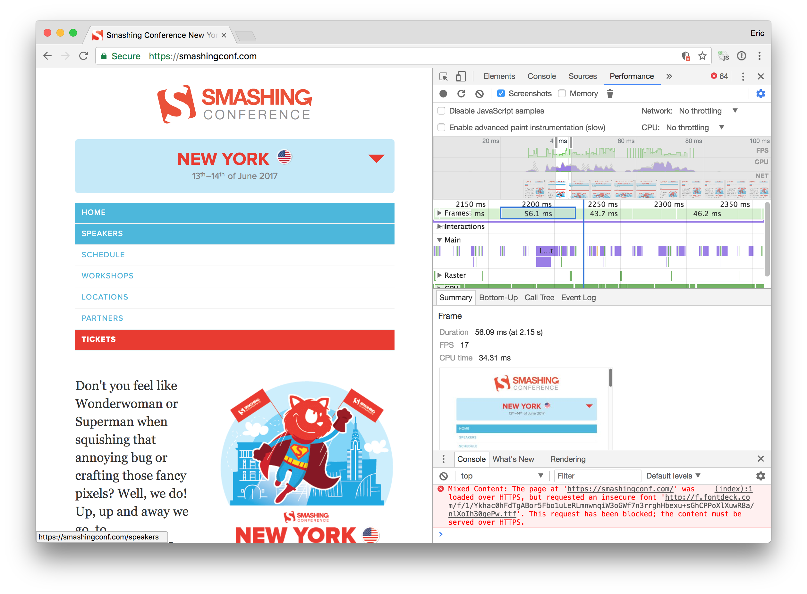
5ms best / 35ms worst
Let me give you a high-level sense of what that number means... My computer is not a low-powered mobile device, it’s a 15" macbook pro.
And when I look at a fairly simple, well-architected, responsive page that uses media queries, like, say SmashingConf.com, and measure the performance of the site as I resize the window, I can drill down into the dev tools and see that, most of the frames are happening right on schedule at 60FPS. Not only that, most of the time between frames is, in fact, idle on the main thread.
The browser is spending about 5-ish milliseconds re-figuring layout and re-painting in response to the changing window size, and it has about 10 or so milliseconds to spare.
If you look closely at this screenshot, you can see that we are dropping a few frames --- mostly because of the work that we're doing to re-size the fluid bitmap images at the bottom of the page. And we do actually drop a couple of frames every once and a while due to layout -- here, it looks like I hit a major breakpoint **right** at the end of a frame, and the browser had to spend a chunk of time calculating and painting the new, significantly different layout... not great, but still, visually, the experience of resizing this page is more or less seamless.
So that gives you a little bit of a sense, maybe, of the baseline we're working with - of what that 16ms budget actually looks like, in practice.
So let's take a look back at our pipeline, now that we've introduced container queries..
A big ol' diagram
Here’s our pipeline again, with the big loop.
Even if we've figured out how to prevent infinite loops, and even if we re-architect browsers to be able to *do* loops – container queries, fundamentally, require taking one or more trips around the loop. Basing styles on styles and layout on layout is literally the whole point.
Every trip around the loop takes time. And if we start using container queries as liberally as we use media queries, today – container-querying all the things... and especially if we start *nesting* container queried components within container-queried components – we might be taking dozens or even hundreds of trips around the loop, each frame.
That's bad for users.
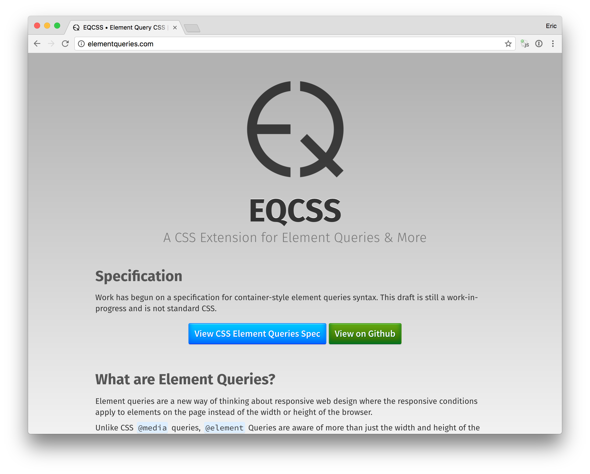
I'm going to show you an example, built with Tommy Hodgin’s prolyfill, EQCSS. Tommy Hodgins has done more work than anyone, anywhere, advocating for Container Queries. He’s built this pollyfill, stuffed it with features, and he’s amassing a frankly staggering library of demos.
I asked him for his worst-performing demo.
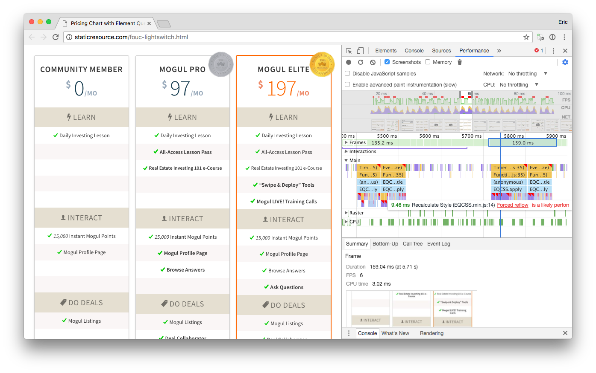
40ms best / 150ms worst
He kindly sent me this pricing comparison chart. Which, when I resized it, well – it's kind of complicated.
First of all, the *visual* performance is more or less ok, but it also feels, I don't know, off. A bit weird.
Drilling into the dev tools, we can see why. EQCSS throttles itself, and waits 200ms between executions. This lets a bunch of normal, speedy frames happen in-between runs.
But every time EQCSS’ resize handler does run, it takes a minumum of 40ms, which means we’re missing a three or four frames. And the worst frames here are blowing the budget by an order of magnitude -- they take 160ms -- we’re missing ten frames in a row. If you drill down and look what’s taking all of that time, Chrome Dev Tools shows you all of these little purple layout boxes with bright red corners, signifying forced reflows that the plugin needed to do as part of its container-querying-work. Each one represents a small trip around this plugin’s particular implementation of the element-query loop for some subtree of the page. Add them up, and you get 6fps performance, instead of 60.
Paths forward
So -- where does that leave us? How do we move forward?
I'm happy to report that some very smart people have some very good ideas and are actively working on pieces of this puzzle.
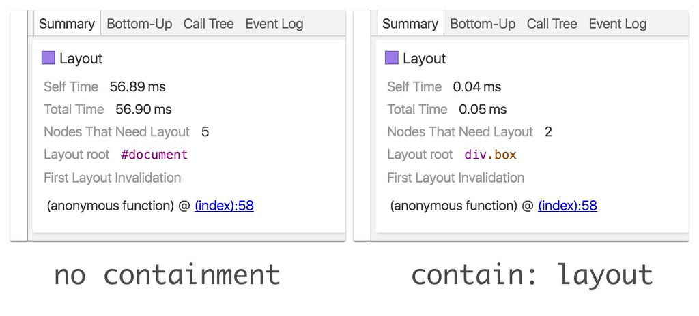
contain: strict; rescue?
The first puzzle piece, we've already mentioned, actually: CSS Containment. I said before that Containment might be the thing that prevents us from creating infinite container query loops – well, it might help offset some of the performance impact of container queries, too. When we prevent children from being able to influence the size, layout, or appearance of their parents – turns out – browsers can usefuly limit and optimize a bunch of layout work. So perhaps, a solution that brought a lot of both container queries **but also** CSS containment to the web, wouldn't be so bad for performance after all.
I haven’t done a lot of testing here myself, but Paul Lewis published this example when the `contain` property landed in Chrome, showing a re-layout time dropping from 50-something ms all the way down to 0.05ms, all because of this one weird CSS property.
I dunno. Seems promising?
Asynchronicity
Knock. there? Async container queries Who’s knock!
The second, and more important idea is: make sure that, even if our container querying is slow, we minimize the damage that we’re doing to users’ experiences by doing the work ~asynchronously~.
Browsers respond to Media Queries synchronously. Which is to say, when a media query toggles between true and false, the browser’s entire world stops for as long as it needs to so that it can respond to the change.
If we can't make container queries as performant as media queries, perhaps we can make them a little less world-stopping. We can let the browser re-schedule container query work, or maybe even push it to the next frame, so that we can continue to keep the rest of the user’s experience from feeling "stalled" or "stuck".
I’m happy to report that there’s a working implementation of this idea too, behind a flag in Chrome:
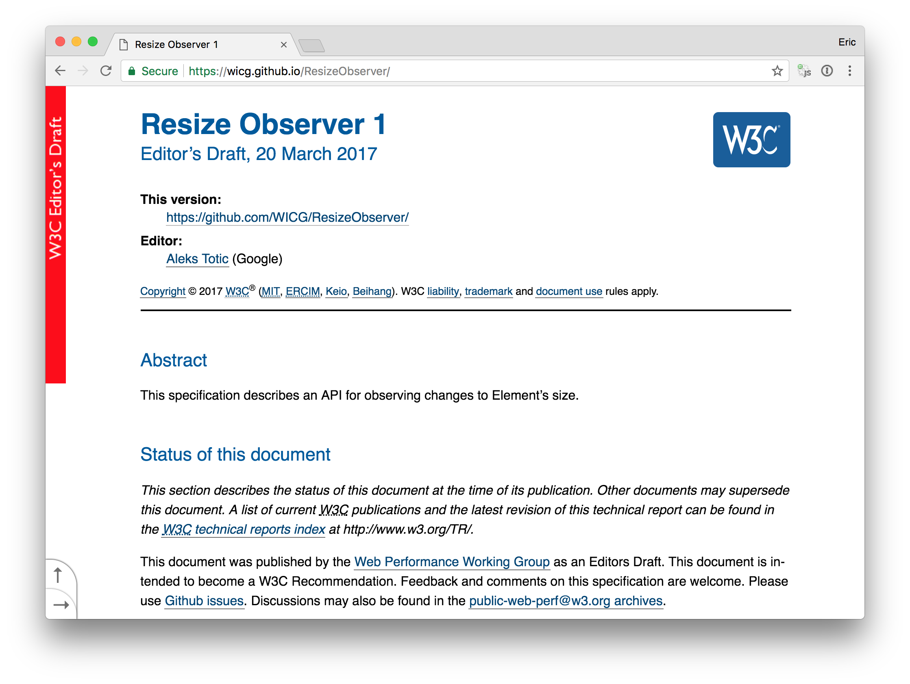
It's called ResizeObserver.
The more I learn about ResizeObserver, the more I love it. It’s pretty much a purpose-built Container Query toolkit.
First and foremost, ResizeObserver lets you attach resize event listeners directly to elements. The current batch of prolyfills have to listen to a whole bunch of possibly-related events –– like window resizes and DOM changes -- and then check to see if any element resizing actually happened, after the fact. ResizeObserver’s primary purpose is to let us observe elements directly.
ResizeObserver also provides access to a stripped-down set of very-cheap-to-query element geometry. Current prolyfills all have to make extensive use of element.getComputedStyle(), which forces a reflow to insure that the queried styles are up-to-date. ResizeObserver gives you access to fresh element geometry far more cheaply.
Also -- asynchronus execution. The callbacks that you register with ResizeObserver are treated as what browsers call "microtasks." Which means that the browser doesn’t have to drop everything and run them to completion as soon as a resize happens. Instead, they're batched up and run at a precise, later time: just after the next layout and just before the next paint. This ensures that you're not doing any work too early -- you're not going to be surprised by any layout changes happening under your nose. Better yet, batched-up microtasks don’t interrupt any other super-important intra-frame work - like, say, responding to user input - and if they do take too long to run, browsers are entirely free to push them to the next frame, so that we don't end up killing the frame rate.
Oh! And! ResizeObserver *also* features a smart way to deal with infinite loops. Because we're in Javascript land, it *can't* keep you from creating infinite layout→response→layout→response→layout→response loops. But it does use a thoughtful strategy – based on nesting-levels - to make sure that it breaks out of those loops in sensible ways, so that the browser can paint, deal with other work that it's doing, and wait to take take one more trip around the infinite loop until the **next** frame.
You've already seen examples of that. This very slide deck, is running a simple, ResizeObserver-based container-query implementation that I slapped together for the purposes of this talk. All of the looping examples that I've shown you flicker between states exactly once per frame, without freezing, stuttering, throwing an exception, or preventing me from interacting with the page, because they were built with ResizeObserver.
In short, ResizeObserver -- perhaps combined with explicit CSS containment -- might give us everything that we need to implement smart, as-performant-as-possible container queries -- in JavaScript.
JavaScript!?
What about CSS?
Now, wait, I hear you saying... Javascript!? Don't we want them in CSS?
Which brings me to the last big idea about how to make Container Queries a thing. Excitingly, it's where we come in.
🎩 🐇
How many of you have heard of Houdini? Some may call it the Extensible Web Manifesto?
Ok, well Houdini is a major effort to give front end developers as much access as possible to the lower-level primitives of CSS. Houdini wants to *explain the magic* of CSS, in Javascript.
The idea here is that, basically, top-down development of web platform features -- where browser vendors and spec writers make the big platform-level decisions, and humble front end developers resign themselves to living with the consequences -- is bad for everyone. Wouldn't it be better if everyday developers could implement experimental new features *themselves*? This would mean that new features were forged, not in long, hypothetical arguments on mailing lists -- but out in the real world, via real useage, on real web pages. And then, eventually, if there’s consensus around good implementations of good ideas – they’ll get pulled into the platform and supported natively.
The best example of this sort of model is, I think, JQuery. Which was iterated on for years – it became the dominant thing that everybody used everywhere all of the time – and then, eventually, its best ideas were adopted by the platform, natively.
Houdini wants to pave the way for things like JQuery to happen in CSS.
It's a grand idea and a good one. And, brought to fruition, it would mean that we, as a community, could take tools like ResizeObserver and `contain: strict`, use them to build container queries in Javascript, and then wrap the implementation up in a nice, tidy, custom CSS syntax which would be used on real web pages and iterated on it in response to observed problems and optimized for real use cases - before being baked into the web platform.
For a problem as big, and tricky, and in need of careful scoping, as container queries, you can see the appeal of this.
Well, I have some good news and some bad news.
Bad news first.
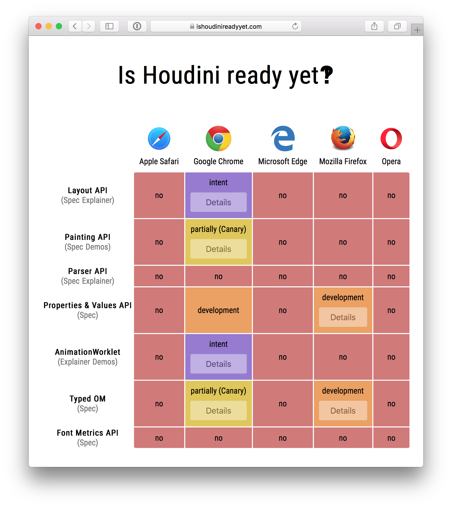
No.
Here's a handy website with, the URL ishoudinireadyyet.com
As you can see, the answer is more or less, no.
Heck, I didn't mention this earlier, but even ResizeObserver and contain:strict are currently only implemented in Blink. So while we can start to build experimental things in Chrome, you can't really deploy them to the public web yet – and you might not be able to for *years.*
That's some pretty bad news.
The Prolyfills are Alright
But the good news is that a lack of widely-supported low-level tooling hasn't stopped a gang of brave and fearless developers from MacGyvering together container-queries prolyfills, anyways. And the resulting libraries are, I’m here to tell you, surprisingly good!
I’ve already mentioned a couple of my favorites.
First, there’s Martin Auswöger’s cq-prolyfill, which implements the smart, infinite-loop-free container queries that we’ve already discussed. It’s biggest selling point, to me, though, is performance — it’s particularly smart about minimizing the number of loops that it needs to take. So despite not yet supporting ResizeObservers, in my limited testing – it is totally, usably, speedy.
Second, there’s Tommy Hodgin’s EQCSS, which, more than any other library, shows you what's *possible* with this stuff. EQCSS doesn't limit you to querying widths and heights. You can query all sorts of things, like, say, the number of lines of text within an element, or the number of children that an element has.
I should mention too, that Tommy just released a new set of libraries that he's calling CSSPlus, that allow you to do even more -- including incorporating arbitrary javascript tests into your CSS selectors. This is super-interesting and super-powerful -- it's more or less a generalized evolution of EQCSS that lets you query, not just elements, but, well, anything.
Then there’s ELQ, which is the product of Lucas Weiner’s master's thesis in computer science. It features a presumably very clever infinite loop resolver that I don't understand.
eq.js by Sam Richard features yet another infinite loop resolver - they call it "greedy" - basically it looks at all of the states in the loop and picks the... biggest? Kinda crazy, but I guess it works! My favorite thing about it is how it uses requestAnimatinoFrame to get async behavior, similar to ResizeObserver’s.
Marc J Schmidt owns one of the longest-running and most popular implementations, which he and a small team of people are still developing. It's called CSS Element Queries and my favorite thing about it, is that, in the absence of proper Houdini access points to CSS, it plays a very neat trick with the CSS attribute selector...
Victor Hubert has a brand new library called Container Query that’s the first to be built on ResizeObserver. It ships with a ResizeObserver polyfill so that you can actually use it, today...
I should also mention that the code that Shopify deployed, that I mentioned earlier, is actually open source too, and lives in a library called ContainerQueries...
And if you search GitHub for “container queries” or “element queries” you could while away a few afternoons checking out many other libraries.
Each of these prolyfills solves the circularity and performance problems inherent in Container queries in a different way. I’ve found them all to be surprisingly usable, and I think we should all be using, or at least experimenting with them.
Fight jank!
Load container query libraries in the <head>
One piece of advice, if you do: you may run into some jarring flashes of unstyled content, with these libraries. If you load them like you should be loading the rest of your javascript -- after all of your HTML and CSS -- be prepared for them to be somewhat invasive.
Thankfully, this problem has a simple solution: load your container query library in the `head`, without async or defer. Doing so will set your first paint back by a bit, but the payoff is worth it: no jarring flashes there.
Why wait? Iterate!
In any case, I’ll say it again: if you’re convinced that Container Queries are a good thing, and if you want them to become a core part of the web platform, the best thing that you can do, as a front end web developer, is to start using these libraries, today.
Maybe on smaller or personal projects at first. I think you might be suprised, as I was, by how fast and useable they are. And as ResizeObserver and Houdini support rolls out, they’re going to become much, much better.
They're going to be good and performant as any native implementation could ever be.
Help them get there, if you can. Try them out. If you run into problems, file issues.
Tweet about your experiences. Write blog posts.
Help container queries help you!
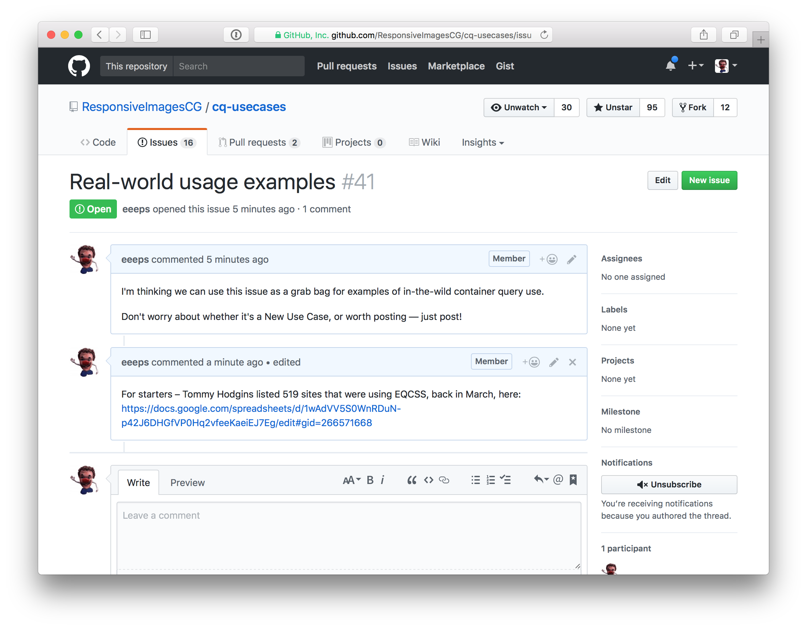
For extra credit...
If you really want to make a difference, document your useage in a place where the web platform community can see it. The Responsive Issues Community Group maintains a 'use cases and requirements' document for Container queries - if you end up using Container Queries on anything public – we wanna know about - post a link to this issue, #41 in the repo.
Carpe query.
Ok, last slide.
I don't know whether any of the libraries that I've mentioned today will *ever* become as popular as JQuery. I don't want to speculate on when container-queries will become an official part of CSS. And while I love the lofty ideals of Houdini and bottom-up web platform development, the last thing I want to do is hold container queries hostage until Houdini is ready. The web needed container queries years ago. I'll take them however they come.
So I guess my big takeaway for you all is: they're already here!
If you like the idea of container queries, don’t wait for native support to decsend from the heavens. Prolyfills give YOU a better way to build websites, today! And they embody a better way for ALL of us to build the a web PLATFORM for the future – together.
So use them! Do it for the platform, and do it for yourself.